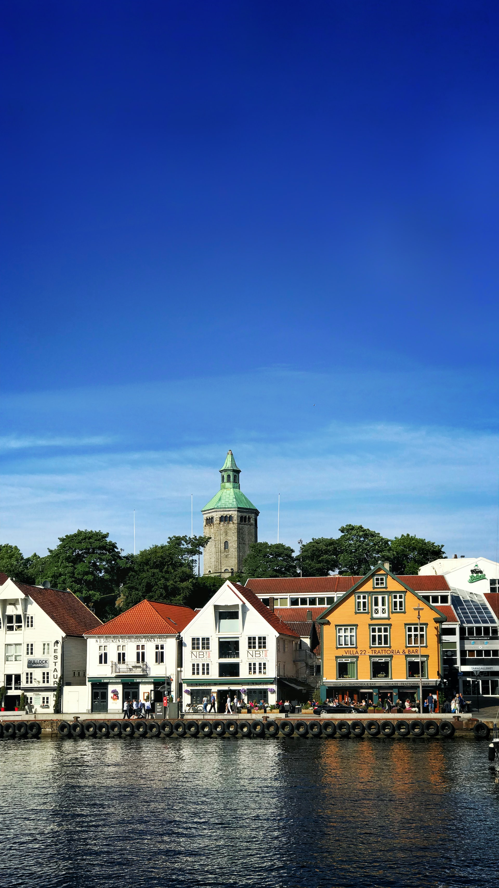
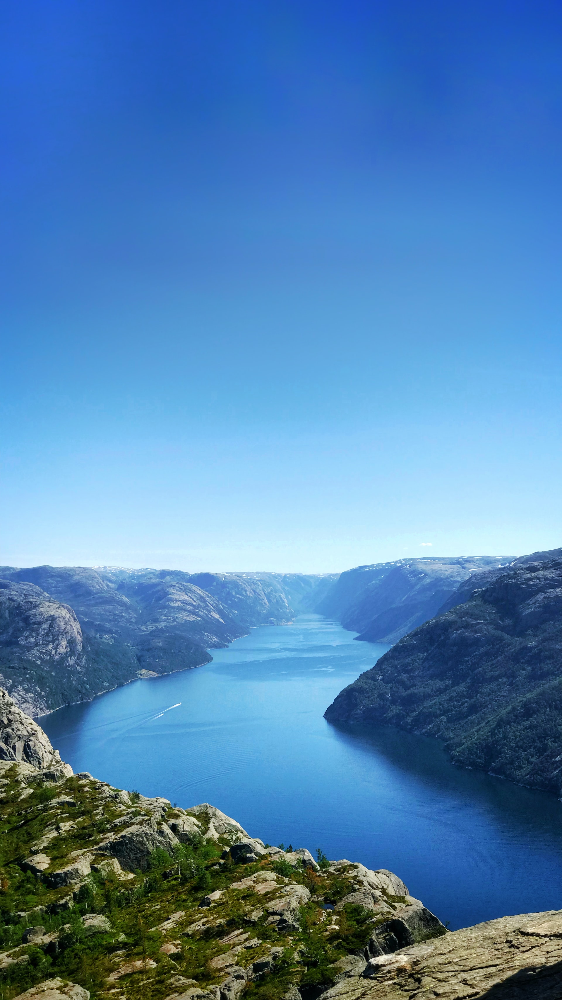
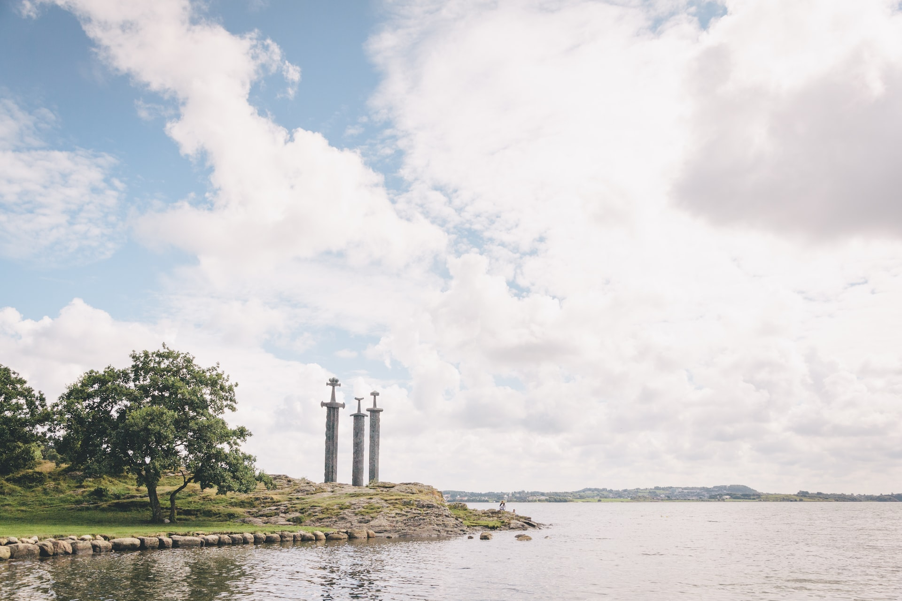

Top things to do while you are here

The City
Stavanger is the city where land meets the coast, where the modern and traditional join forces.

The Nature
Stavanger is surrounded by nature on all sides and you are never far away from beautiful enviroments.

The History
There is no shortage of historical monuments and lore in Stavanger. The iconic 3 swords stand tall and proud in Hafrsfjord.